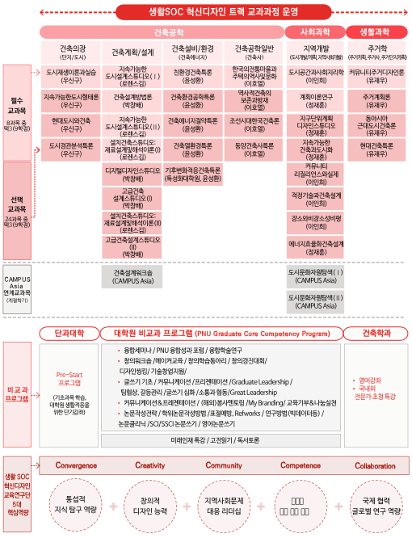

Graduate Program
대학원

석박사 학위 프로그램 Master, Doctorial Course
부산대학교대학원 건축학과에는 정규 석·박사 프로그램, CAMPUS Asia 프로그램과 연계된 계절학기 교과 프로그램(부산대 주관, 해외대학 주관), 교환학생 프로그램 등 다양한 교과프로그램으로 구성되어 있으며 부산대-동제대(5학기), 부산대-큐슈대(4학기) 사이의 복수학위 프로그램 그리고 BK21 쇠퇴도시 사회문제해결을 위한 핵심역량 교육과정으로서 생활SOC 혁신디자인 트랙이 운영되고 있다.
부산대학교대학원 건축학과는 융복합 교육연구의 다양한 경험과 역량을 바탕으로 융복합형 인재 육성을 위한 융합교과목 개발과 특성화 프로그램을 운영 중에 있다. 5년제 UIA 인증제 교육과정과 학사관리체제를 구축하고 평가기관으로부터 지난 10년간 우수한 인증평가를 받아 건축전문가를 양성하는 학부 프로그램과 연계한 학·석사연계과정과 석·박사 연계과정을 개설하여 우수 학생의 유치 및 확대를 위한 환경을 구축하였으며 CAMPUS Asia의 지속가능한 아시아의 도시건축 환경개발을 리드할 인력양성 협력교육 프로그램과 지역의 도시건축 관련 주요과제를 수행하는 워크숍으로서 동아시아 건축도시설계워크숍(현,부산국제건축디자인워크숍과 통합운영), 그리고 다양한 지역의 협력 기관들과의 공동연구 기반 구축을 위해 지속적으로 연구 교류, 현장 답사 및 국내외 세미나 프로그램을 개최해 오고 있으며 4단계 BK21 사업으로 세계 100위권 전공으로 도약하고자 하는 비전을 가지고 있다.
The Department of Architecture at the Graduate School of Pusan National University operates a variety of curriculum programs such as regular master's and doctoral programs, seasonal semester curriculum programs linked to the CAMPUS Asia program, and exchange student programs. In addition, along with a dual degree program between Pusan National University-Tongji University(China) and Pusan National University-Kyushu University(Japan), the BK21 Education Research Program operates the Life SOC Innovative Design Track as a core competency curriculum for solving social problems in declining cities. The Department of Architecture, Graduate School of Pusan National University, is operating convergence curriculum development and specialization programs to foster convergence talents based on diverse experiences and competencies in convergence education research. It established a 5-year UIA certification system and an academic management system, and established an undergraduate-master integrate course and a master-doctoral integrate course in connection with the undergraduate program to cultivate architectural experts by receiving excellent certification evaluations for the past 10 years from evaluation agencies. The environment that can attract excellent students has established.
대학원 건축학 교과과정의 구성 Curriculum
생활SOC 혁신디자인 교육과정 The Purpose of Program

최근의 학생지원 교육사업과 성과 Recent Supportive Education Program
Second BK21 Project - Sustainable coastal area Architectural technology research human Resources postering project
Local university specialization project (CK-I)-Construction convergence professional training project for a creative coastal city
BB21 Plus-Convergence Urban Regeneration Project in preparation for an ultra-aged society
Graduate School of Climate Change Specialization-A Study on the Development of a Green Infrastructure Urban Policy Model for Climate Change Adaptation
Specialization of university innovation support projects - Specialization of fostering professional manpower for construction convergence
National University Development Project - Support for Community Contribution/Glocal Urban Regeneration Human Resources Fostering